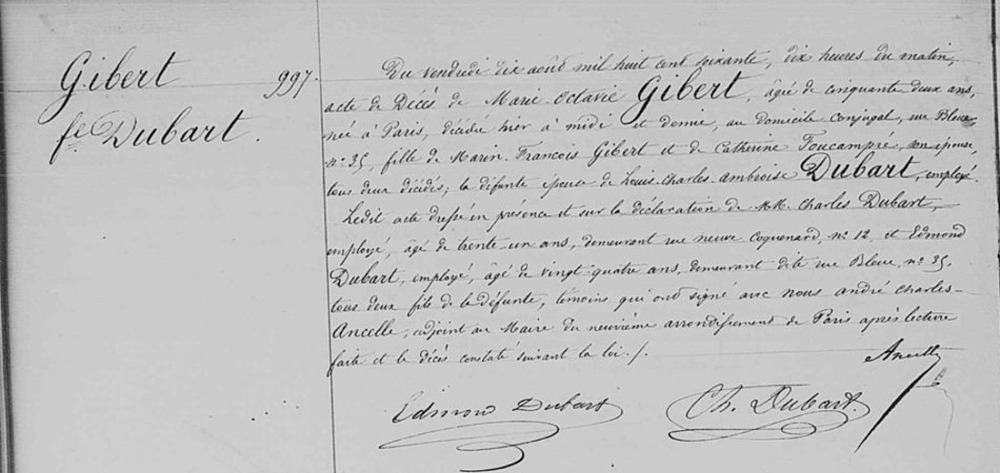

Acte d'état civil
Décès de Marie Octavie Gibert, Paris 9e, 10/08/1860
Ce document établit
- Marie Octavie Gibert, épouse de Louis Charles Ambroise Dubart, meurt le 9 août 1860 à midi et demi au domicile conjugal, 35 rue Bleue (Paris 9e), âgée de 52 ans, née à Paris vérifié A0236
« « décédée hier à midi et demie, au domicile conjugal, rue Bleue n° 35 » »
- Marie Octavie Gibert est fille de Marin François Gibert et de Catherine Foucampré (Foucamprez) : elle est donc sœur du Dr Camille Melchior Gibert (AG19) vérifié A0237
« « fille de Marin François Gibert et de Catherine Foucampré, son épouse, tous deux décédés » »
- En juillet-août 1860, Louis Charles Ambroise Dubart est « employé », domicilié 35 rue Bleue (9e) vérifié A0238
- Marie Octavie Gibert est née entre le 10/08/1807 et le 09/08/1808 (fourchette tirée de l'âge déclaré, 52 ans, au décès du 09/08/1860) non vérifié A0499
« « âgée de cinquante deux ans, née à Paris » (acte déjà en base, A0236) »
- Octavie avait 19 ou 20 ans à la mort de sa mère (14/09/1827) et 21 ou 22 ans à celle de son père (05/10/1829), soit environ trois mois et demi après la naissance de son fils Charles (24/06/1829) non vérifié A0500
Lire la transcription intégrale : Transcriptions — Louis Charles Ambroise DUBART (Sosa 8) →
Personnes concernées
Transcription G10